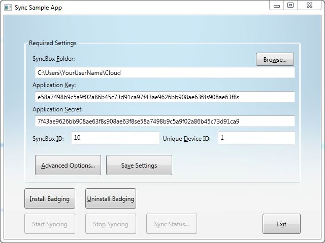
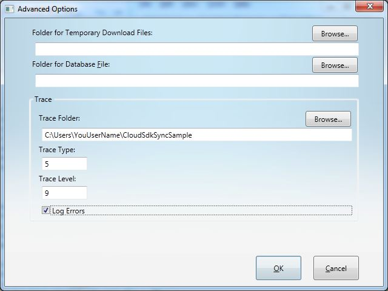

Introduction
The Cloud Windows Client SDK allows your application to easily support real time file synchronization services.
A SyncBox can be thought of as a folder with a hierarhical directory structure. Any files placed in a SyncBox can be automatically synced to the same SyncBox on all of your other devices (Windows, Mac, iOS, Android and Windows RT). Your account can have multiple SyncBoxes, and your application can open multiple SyncBoxes on a device.
In desktop environments, a SyncBox is tied to a particular local disk directory. e.g., on Windows, "C:\Users\<UserName>\<YourSyncBoxName>".
See how easy it is:
public static class MyApplication
{
private class YourSettings : ISyncSettings
{
public string SyncRoot
{
get { return "<Full path of the folder to sync>"; }
}
public string ApplicationKey
{
get { return "Paste this key from your Cloud developer DashBoard."; }
}
public string ApplicationSecret
{
get { return "Paste this secret from your Cloud developer DashBoard. Note: This private key should actually be retrieved from a secure location."; }
}
public string SyncBoxId
{
get { return "Paste this ID from your Cloud developer DashBoard."; }
}
public string DeviceId
{
get { return "ThisDevice"; }
}
public string ClientVersion
{
get { return "A friendly name of your application."; }
}
}
public static int main(string[] args)
{
ISyncSettings theSettingsToUse = new YourSettings();
CLSync box = new CLSync();
box.PushNotificationError += OnPushNotificationError;
CLSyncStartStatus startStatus;
box.Start(theSettingsToUse, out startStatus );
if (startStatus != CLSyncStartStatus.Successful)
{
}
box.Stop();
}
private void OnPushNotificaitonError(object sender, NotificationErrorEventArgs e)
{
}
}
The code above will automatically sync files in the "SyncRoot" directory with your other devices related to this SyncBox, and with the SyncBox on the Cloud servers.
SDK Installation
After installing the SDK you will have the following:
- A binary sample app that demonstrates syncing and sync status features, including support for badging Explorer files and folders with sync status icons.
- A Visual Studio 2012 project with the source code for the sample app.
- This documentation.
- Start menu items:
- Cloud.com
- Cloud
- Start CloudSdkSyncSample: Starts the pre-built sample program which demonstrates the use of the API provided in the SDK.
- Show SDK Documentation: Launches your default browser to view this documentation.
- Uninstall Cloud SDK: Uninstalls the SDK.
- VS CloudSdkSyncSample Solution: Launches Visual Studio with the sample app project.
Install the SDK by following the steps below:
- Browse to the Cloud download page at http://developer.cliff.cloudburrito.com. You can read this documentation there.
- Click the Download link to download the Windows Cloud SDK installation program.
- Follow the instructions to install the Cloud SDK.
Sample Application
The sample app (CloudSdkSyncSample.exe) demonstrates the use of the SDK APIs. It is a C# WPF application (.NET 4 Client Profile) designed using the Model-View-ViewModel (MVVM) pattern. The sample app is provided in binary and source forms.
Main Window
Run the sample app to see the main window below:

Sample App Main Window
You will enter information into the following Required Settings fields:
- SyncBoxFolder: This is the full path of the folder on your device that will be synced. The folder must be on a locally-attached drive. Typically you will specify a folder in your user directory. You may use the Browse button to locate the folder to be synced.
- Application Key: Paste this key from your Cloud developer DashBoard web page (http://developer.cliff.cloudburrito.com). This key uniquely identifies your application.
- Application Secret: Paste this private key from your Cloud Developer DashBoard web page. Note: This is just for demonstration purposes. You would normally access this private key from a secure location.
- SyncBox ID: Paste this ID from your Cloud Developer DashBoard web page. This is the unique identity of the SyncBox. It represents a folder that will be synced across all of your devices, and to the Cloud servers.
- Unique Device ID: Choose a unique name (within this SyncBox ID) for this device. The name must not include any characters that are not allowed in a Windows folder name.
Buttons:
- Advanced Options: Click this button to see the advanced options dialog (described below).
- Save Settings: Click this button to save the Required Settings and any Advanced Options you have set. You can start syncing after valid settings have been saved.
- Install Badging: Click this button to install the badging Explorer shell extension (BadgeCom.dll). This is discussed below. Installation of the badging DLL involves stopping Explorer, registering BadgeCom.dll and restarting Explorer. Clicking this button multiple times will have no additional effect. The installation of badging support is optional.
- Uninstall Badging: Click this button to uninstall the badging shell extension dll. Again, this involves stopping Explorer, unregistering BadgeCom.dll and restarting Explorer. Clicking this button twice will result in an error message because the dll has already been unregistered on the second attempt.
- Start Syncing: Click this button to start syncing the SyncBox folder.
- Stop Syncing: Click this button to stop syncing the SyncBox folder.
- Sync Status: Click this button to see the sync status window (discussed below).
- Exit: Click this button to exit the sample app. If syncing has been started, it will be stopped first.
Advanced Options
The Advanced Options dialog is displayed when you click the Advanced Options button on the main window:

Sample App Advanced Options Dialog
Enter the following information:
- Folder for Temporary Download Files: (Optional) This is the full path of a folder to be used to store files that are being actively downloaded. When the download is complete, the files are moved to their permanent position in the SyncBox folder.
- Folder for Database File: (Optional) This is the full path of a folder to be used to store the sync database file.
- Trace Folder: (Optional) This is the full path to store trace files. There are several types of trace files stored there. This field is required if Log Errors (below) is checked.
- Trace Type: This is a bit mask to control the sync trace output. It is built from the following definition:
{
<summary>
No general trace (errors are handled seperately)
</summary>
NotEnabled = 0x00,
<summary>
Communication tracing estimates the HTTP headers and body content during communication;
when used without the AddAuthorization flag, authorization parameters will be exluded such as authentication tokens or user/pass
</summary>
Communication = 0x01,
<summary>
AddAuthorization is only valid in conjunction with Communication (CommunicationIncludeAuthorization);
Adding this will cause authorization parameters to appear in communication trace such as authentication tokens or user/pass (in plain text!!!)
</summary>
AddAuthorization = 0x02,
<summary>
See flags Communication and AddAuthorization tags for this combination flag
</summary>
CommunicationIncludeAuthorization = 0x03,
<summary>
Logging the flow of FileChanges is extremely costly, use for development purposes only
</summary>
FileChangeFlow = 0x04
}
- Trace Level: This is a number to control the amount of functional tracing to be written. Specify a number from 0 to 9. 0: no functional trace. 9: full functional trace.
- Log Errors: Check this box to generate a trace file containing only sync errors. The Trace Folder (above) is required if this box is checked.
Buttons:
- OK: Click this button to keep your changes to the Advanced Options. The kept changes will not be persisted to disk until you click the Save Settings button on the main window.
- Cancel: Cancel any changes you made to the Advanced Options.
Sync Status Window
The Sync Status Window is displayed when you click the Sync Status button on the main window:
This window has two areas. The upload and download graphical status bars appear on the top, each with historical bandwidth display. Sync supports up to six upload and six download threads, but your local group policy may limit the number to two each. If more than two upload or download threads are activated, a vertical scrollbar will appear.
The sync messages appear on the bottom in a scrolling window.
The sync status window is instantiated when sync starts, and it remains hidden until activated by the main window Sync Status button.
Click the Done button to hide the sync status window.
Badging
The badging support works with the sync subsystem to paint small sync status icons over the Explorer file and folder icons. It "badges" the Explorer icons.
There are four possible badges:
- Synced
- Syncing
- Selective (selectively synced)
- Error
See the example below:
The badging support is provided by modules in CloudApiPublic.dll and in BadgeCom.dll. Badging support will be activated if BadgeCom.dll is registered as a shell extension. If not, syncing will occur normally.
Because BadgeCom.dll is a shell extension, it requires special installation support. When installing this DLL, you must perform the following steps:
- Stop all Explorer processes
- Run "regsvr32 <installation path>\BadgeCom.dll"
- Restart Explorer
Uninstalling BadgeCom.dll involves the following steps:
- Stop all Explorer processes
- Run "regsvr32 /u <installation path>\BadgeCom.dll"
- Restart Explorer
- Delete the file BadgeCom.dll
A problem may occur when you attempt to delete the BadgeCom.dll file in the last step above. You may find that the file is still locked because other processes that use Explorer may have BadgeCom.dll loaded. You can use Restart Manager (http://msdn.microsoft.com/en-us/magazine/cc163450.aspx) to request that the process unload BadgeCom.dll. If that doesn't work, you can ask the user to close the process that has the file locked. Failing that, you can kill the process (with the user's permission). Then the file can be deleted.
Starting Sync
Here are the steps used to start sync. Refer to MainViewModel:StartSyncing().
- Verify settings: Sample code can be found in MainViewModel:SaveSettings(). If the settings are incorrect, the _syncBox.Start() function will return an error.
- Verify that the SyncBox folder or authorization information has not changed. If it has, you should reset the sync database by calling _syncBox.SyncReset or _syncBox.WipeIndex().
- Call _syncBox.Start() to start syncing. This function takes the sync settings. It returns a simple result enumeration, and also returns CLError (see below) with possible additional information.
- Inspect the out parameter (startStatus) which is the result of _syncBox.Start(). Handle an error if the result is not CLSyncStartStatus.Successful.
- If sync was started successfully, start your sync status implementation. In the case of the sample app, this is SyncStatusView, using EventMessageReceiver as a ViewModel. Both of these are described below.
Stopping Sync
Here are the steps to stop sync. Refer to MainViewModel:StopSyncing().
- Close and dispose your sync status implementation.
- Call _syncBox.Stop();
The CLError Class
CLError is a class with the following features:
- Stores one or more Exceptions.
- Each Exception may have an inner exception.
- Supports the tracing of the contained exceptions via LogErrors().
- Adding an exception to CLError and logging it:
CLError error = null;
try
{
...
}
catch (Exception ex)
{
error += ex;
error.LogErrors(_syncSettings.TraceLocation, _syncSettings.LogErrors);
...
}
The SyncStatusView Class
The Sync Status View window is the sample app's implementation of a class to view the status information produced by the sync engine. Yours may be very different.
The following information is produced by the sync engine for possible consumption by your sync status viewer:
- List of files currently uploading (ObservableCollection)
- List of files currently downloading (ObservableCollection)
- List of messages (ObservableCollection)
- Individual sync change events
The sample app SyncStatusView does not handle the individual sync change events. Those events are described below.
The SyncStatusView object uses two ViewModels (EventMessageReceiver for binding to the ObservableCollections of data, and SyncStatusViewModel only to handle the Done button action).
This view is instantiated at _syncBox.Start() by the sample app, and it runs until _syncBox.Stop(). Buttons simply show and hide the window. Your view can instantiate and dispose your view (and the related EventMessageReceiver ViewModel) at any time, but the data collection will not begin until you instantiate the class.
The EventMessageReceiver Class
EventMessageReceiver is used as one of the ViewModels for your sync status view. You can bind to any of the following ObservableCollections:
- ListFilesDownloading
- ListFilesUploading
- ListMessages
The ListFilesDownloading and ListFilesUploading collections expose the following properties:
public interface ICLStatusFileTransfer
{
<summary>
Relative path to the transferring file from the sync root folder
</summary>
string SyncRelativePath { get; }
<summary>
Whether this file transfer status should be visible (visible for actual transfers and not visible for blank placeholders)
</summary>
Visibility Visibility { get; }
<summary>
Number from 0 to 1 for the current transfer rate out of historical maximum or twice the starting rate (whichever is greater)
\subsection sampleapp-syncstatusView-subsec The SyncStatusView Class
The Sync Status View window is the sample app's implementation of a class to view the status information produced by the sync engine. Yours may be very different.
The following information is produced by the sync engine for possible consumption by your sync status viewer:
- List of files currently uploading (ObservableCollection)
- List of files currently downloading (ObservableCollection)
- List of messages (ObservableCollection)
- Individual sync change events
.
The sample app SyncStatusView does not handle the individual sync change events. Those events are described below.
The SyncStatusView object uses two ViewModels (EventMessageReceiver for binding to the ObservableCollections of data, and SyncStatusViewModel only to handle the Done button action).
This view is instantiated at _syncBox.Start() by the sample app, and it runs until _syncBox.Stop(). Buttons simply show and hide the window.
Your view can instantiate and dispose your view (and the related EventMessageReceiver ViewModel) at any time, but the data collection will not begin until you instantiate the class.
\subsection sampleapp-eventmessagereceiver-subsec The EventMessageReceiver Class
EventMessageReceiver is used as one of the ViewModels for your sync status view. You can bind to any of the following ObservableCollections:
- ListFilesDownloading
- ListFilesUploading
- ListMessages
.
The ListFilesDownloading and ListFilesUploading collections expose the following properties:
\code{.cs}
public interface ICLStatusFileTransfer
{
<summary>
Relative path to the transferring file from the sync root folder
</summary>
string SyncRelativePath { get; }
<summary>
Whether this file transfer status should be visible (visible for actual transfers and not visible for blank placeholders)
</summary>
Visibility Visibility { get; }
<summary>
Number from 0 to 1 for the current transfer rate out of historical maximum or twice the starting rate (whichever is greater)
</summary>
Double DisplayRateAtCurrentSample { get; }
<summary>
A WPF Control for display of the rate history for the current transfer
</summary>
RateGraph StatusGraph { get; }
<summary>
The percentage completeness of transfer
</summary>
Double PercentComplete { get; }
<summary>
String for display of total transfer size in appropriate scale representation of bytes (i.e. "X bytes" or "X.Y KB" or "X.Y MB" or "X.Y GB"...)
</summary>
string DisplayFileSize { get; }
<summary>
Estimated time remaining for transfer completion
</summary>
string DisplayTimeLeft { get; }
<summary>
Total time already elapsed since the transfer start
</summary>
string DisplayElapsedTime { get; }
}
ListMessages items expose the MessageText property (string).
Sync Change Events
Sync change events can be used to track real-time progress. They are described in class MessageEvents. MessageEvents exposes the following events:
- public static event EventHandler<EventMessageArgs> NewEventMessage: This event is fired every time a new EventMessage is received. EventMessages are also placed in the EventMessageReceiver.ListMessages ObservableCollection. The EventMessageArgs passed with each received message includes the message itself (string), the event message level (importance) and a flag to indicate that the message is an error.
- public static event EventHandler<SetCountArgs> DownloadingCountSet: This event is fired each time a new file download is started. The SetCountArgs passed with each received message includes the new count of downloading files.
- public static event EventHandler<SetCountArgs> UploadingCountSet: This event is fired each time a new file upload is started. The SetCountArgs passed with each received message includes the new count of uploading files.
- public static event EventHandler<IncrementCountArgs> DownloadedCountIncremented: This event is fired each time one or more files complete the download process. The IncrementCountArgs passed with each received message includes the number of files that completed download.
- public static event EventHandler<IncrementCountArgs> UploadedCountIncremented: This event is fired each time one or more files complete the upload process. The IncrementCountArgs passed with each received message includes the number of files that completed upload.
- public static event EventHandler<TransferUpdateArgs> FileDownloadUpdated: This event is fired each time the transfer status changes for a file being downloaded. The TransferUpdateArgs passed with each received message includes a unique ID if the file transfer, and the current real-time status of the transfer.
- public static event EventHandler<TransferUpdateArgs> FileUploadUpdated: This event is fired each time the transfer status changes for a file being uploaded. The TransferUpdateArgs passed with each received message includes a unique ID if the file transfer, and the current real-time status of the transfer.
 1.8.2
1.8.2